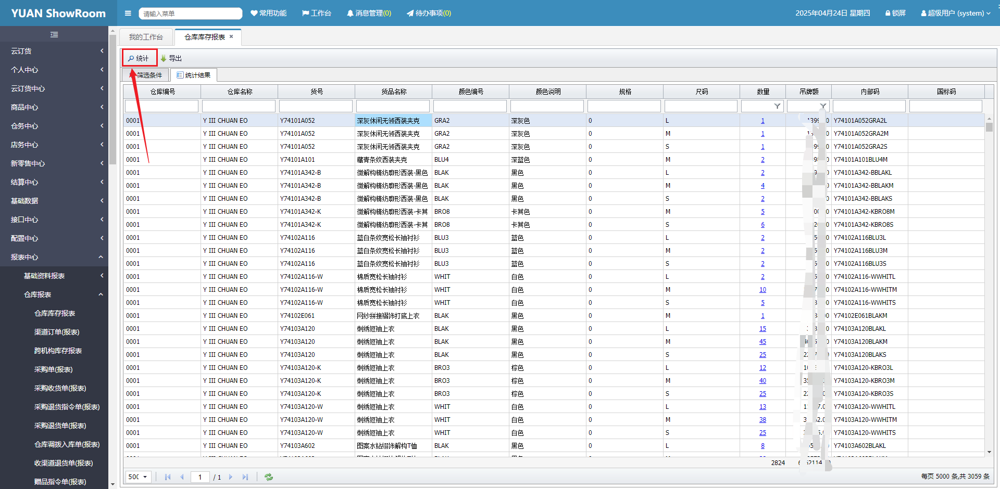

康雷 ERP 系统 — 合作品牌方使用手册
YUANSHOWROOM 康雷ERP系统-品牌方使用手册
目的：
YUANSHOWROOM内部定制了适用于商品采购、商品数据、商品“云仓”共享、商品单据发货等，系统工具，对接双方商品订单唯一途径的作业工具，为了明确与YUANSHOWROOM与品牌方合作期间，使用共同协同工具，提高SHOWROOM与品牌方双方商品采购工作的效率，制定康雷ERP系统使用规范手册说明书。品牌商品采购人员以本系统说明书开展商品对接工作。

康雷发货系统登录入口：http://ji121.123580.com/ 选择企业员工入口登录， 账号、密码请联系YUAN公司人员；
一、 功能单据说明：2
1、采购单2
2、品牌维护库存 3
3、商品配货8
4、品牌发货9
5、报表统计功能 13
功能单据说明：
1、采购单商品中心-采购管理-采购单-双击打开单据在商品信息栏，可以看到具体的采购明细数量（YUAN根据客户订单，截单后给品牌方下的采购明细，截单后商品部会导出采购订单同步给品牌方）

点击商品信息栏查看商品明细

品牌维护库存仓务中心-盘点和结存-库存调整单-新建
2.1没有用聚水潭同步云仓库存的品牌：
“云仓”库存在此操作维护库存库存调整单：（此单据为品牌方操作）点击新建创建库存调整单，点击商品信息栏录入需要维护的商品库存

录入商品信息有两种方式：手动输入货号、Excel表格导入
手动输入货号：鼠标光标点击商品编号输入框输入款号后按键盘回车↩︎键

弹出颜色尺码选择界面，在此输入该款号的发货的颜色和尺码；

Excel表格导入：点击导入按钮下载导入模板，可选择货品模板和条形码模板

录入完商品信息后点击保存、提交按钮即可增加/减少库存（商品数量填写正数为增加，负数为减少）

2.2用聚水潭同步“云仓”库存的品牌
“云仓”库存对接要求：
YUAN会在聚水潭上发起邀请，邀请品牌成为YUAN的供应商，品牌方点击链接接受合作，并且开启库存同步选项，把库存同步给YUAN；


设置供应商分销价格、库存规则


品牌提供的资料需要与聚水潭系统里的资料一致；(商品、颜色、尺码、商品编码)

把云仓的库存上传到聚水潭的库存管理后，云仓的库存会同步到YUAN的康雷系统以及前端订货系统。
3、商品配货

商品中心-调拨指令中心-出货指令单出货指令单（商品部创建后品牌可见）: 是YUAN 公司商品部做给品牌方的发货指令，品牌是根据这个指令做发货动作，双击可打开单据明细查看


4、品牌发货
仓库出货单 ：仓务中心-仓库工作台
查看（监控）YUAN 的出货任务方式： 【仓库工作台】【仓库出货单】两种都可以查看
1、通过查看【仓库工作台】的 出货渠道指令单 来确定发货任务；点击处理即可引用YUAN的出货指令来发货；

2、通过【仓库出货单】的待完成单据界面可以进行筛选发货店铺来明确发货详情，可以筛选发货类型、发货店铺等，点处理即可进行发货；

发货数量有两种方式：
照单全发（按照出货指令全发）；
按实际发（按照品牌自己意愿发），如存在多次发货的单据，第一次没发完的后续需要再发货的与商品部沟通再次推送发货单给品牌。
按照实际情况二选一
第一种：照单全发：则点击“是”

带出指令单的商品信息后检查款号、尺码、数量没问题，保存提交后即可

第二种：按实际发货（拆单）：点击“是”后将本次不发货的部分款号勾选后鼠标右键点击删除对应的款号，剩余的即是本次发货明细，点击保存提交即可。

手动输入货号：鼠标光标点击商品编号输入框输入款号后按键盘回车↩︎键，弹出颜色尺码选择界面，在此输入该款号的发货的颜色和尺码；
录入所有发货商品后核实发货数量无误，点击保存、提交按钮；


物流信息
单据提交后填写快递单号，发货结束；

查看已发货的历史发货单数据，可以双击点开查看单据详情和发货明细

5、报表统计功能a、仓库库存报表：查本品牌的库存的报表；
b、采购单报表：查看YUAN 公司下达的采购任务报表，可查看导出具体的采购明细；
c、仓库出货单报表：查本品牌的发货明细，即给客户发的货品明细；
d、配出差异报表：查YUAN公司指派的 “出货指令” 任务 与本品牌实际发货数量的差异报表；
e、渠道订单报表：查看YUAN已审核的客户订单数据

报表筛选说明：

选择输出信息说明：

选择完成后点击统计按钮查看数据
